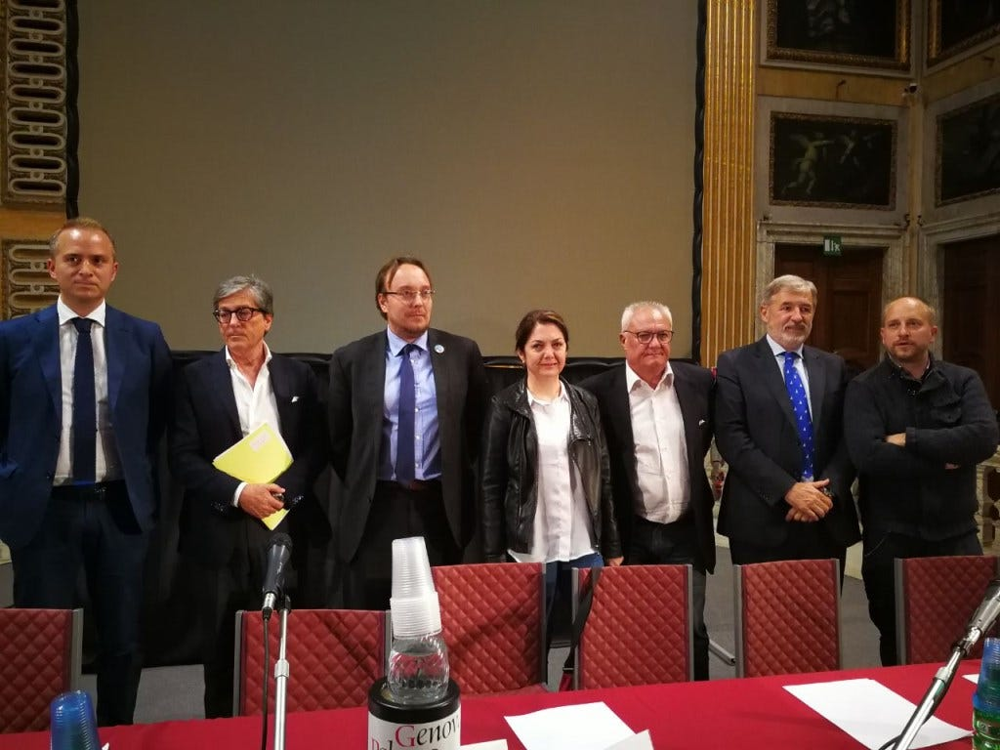

Lo sviluppo digitale nel programma dei candidati sindaco a Genova
Premessa, motivazione, metodo

Premessa, motivazione, metodo
Domenica 11 giugno andremo a votare il sindaco della nostra Genova.
Non avendo le idee chiare sulle diverse proposte, io e Giuditta Del Buono abbiamo deciso di leggere tutti i programmi dei candidati e di analizzarli relativamente al tema del digitale, riportando qui estratti dei documenti disponibili e inserendo nostre riflessioni personali.
Intendiamo per “digitale” l’impatto sociale, economico e lavorativo delle nuove tecnologie informatiche, in relazione alle competenze umane e ad un auspicabile rinascimento nel e per il nostro territorio.
L’argomento potrebbe apparire secondario rispetto ad altre criticità evidenti a livello locale, ma in realtà lo sviluppo e l’utilizzo di nuove tecnologie sono fattori che condizioneranno fortemente il lavoro del futuro e dunque le capacità di sopravvivenza e di crescita della nostra città. Abbiamo poi deciso di concentrare la nostra attenzione in modo specifico su questo ambito perché riguarda il nostro personale settore di lavoro (informatica ed innovazione digitale).
L’approccio che abbiamo adottato per realizzare l’analisi è questo:
- ci siamo attenuti strettamente alla lettura dei programmi scritti ufficiali e volutamente non abbiamo considerato (pur avendoli in parte seguite) le video interviste, i talk-show e panel vari.
- per ognuno dei candidati abbiamo cercato sul web il documento del programma, abbiamo estratto le parti che riguardano il digitale e le abbiamo riportate e commentate esprimendo un nostro parere.
- abbiamo connotato i nostri personali commenti con le sigle [GR] per le note di Giorgio Robino e [GDB] per le note di Giuditta Del Buono.
Osservazioni generali
I 9 candidati sindaco sono qui elencati in ordine alfabetico:
1. Stefano Arrighi
2. Marco Bucci
3. Marika Cassimatis
4. Gianni Crivello
5. Arcangelo Merella
6. Marco Mori
7. Luca Pirondini
8. Paolo Putti
9. Cinzia Ronzitti
I programmi presi in considerazione sono i documenti pubblicati sul web, in data 5 giugno 2017, ore 14:00. Articolo aggiornato in data 8 giugno, ore 15:30.
Dei 9 candidati, solo 4 hanno pubblicato sul web un documento vero e proprio che approfondisce e dettaglia il programma proposto; 4 di loro hanno pubblicato una singola pagina web, piuttosto scarna di contenuti, uno di loro non ha reso disponibile il proprio programma nemmeno attraverso una pagina web (lavoro che avrebbe richiesto non più di qualche ora di impegno). Casualmente, e ad alleviare il nostro senso di colpa per questa scelta non del tutto politically correct, nell’immagine di apertura dell’articolo mancano proprio i due candidati il cui programma è stato divulgato in misura minore.
Ci siamo stupiti quindi prima di tutto della perlomeno apparente (attendiamo di essere contraddetti nel caso ci fossero sfuggite le corrette fonti) scarsità di informazioni scritte che caratterizza buona parte delle candidature.
Riteniamo che questa mancanza di approfondimento debba essere di per sé criticata, anche se il nostro obiettivo qui non è quello di fare un’analisi politica generale (proprio per questo motivo abbiamo volutamente omesso simboli/riferimenti di partito o movimento o ideologia).
I programmi talvolta contengono inoltre errori di forma sui quali non siamo intervenuti. Anche le nostre riflessioni sono riferite ai contenuti del programma e non all’uso (talvolta curioso) della terminologia tecnica.
Ecco di seguito il nostro report candidato per candidato.
1. Stefano Arrighi
Programma
Non abbiamo individuato un documento di programma per le comunali.
Abbiamo richiesto chiarimenti e approfondimenti, non ancora pervenuti. Spulciando l’”alfabeto programmatico” del Popolo della Famiglia al link:
Alla lettera “d” troviamo la “Destinazione universale dei beni”. Nessuna traccia del digitale nemmeno tra le altre lettere.
[GDB][GR] Ci sembra incredibile che un candidato sindaco non abbia trovato modo di pubblicare per iscritto il proprio programma personale. Sul digitale (come su ogni altro tema) per quanto ci riguarda almeno per ora Arrighi è escluso dal confronto.
2. Marco Bucci
Programma
documento (55 pagine)
Sul digitale
pagina 7:
L’ambizione di Genova è di diventare Smart, una città intelligente che promuove modelli di sharing economy (economia della collaborazione) per la totalità dei suoi cittadini. Un «Comune in tasca» accessibile nei suoi servizi a tutti i soggetti interessati perché tutto sarà online e fruibile da ogni dispositivo digitale (e- Government).
pagina 9:
3. Avvieremo un pacchetto di esenzioni fiscali relative alle tasse locali che assieme alla esenzione dell’IRAP regionale renderà competitivo il Comune per i nuovi insediamenti,prevedendo una riduzione delle imposte locali (IRAP e TARI) per le imprese che si insedieranno sul territorio e per le nuove start up innovative, ma anche per le aziende che assumeranno nuovo personale.
[GR] Good news, si tenga però presente che la dicitura “startup innovative” non significa tout-court aziende che operano nel digitale e di fatto ad oggi non identifica pienamente aziende connotate da un forte contenuto di innovazione.
[GDB] Interessanti le esenzioni fiscali.
4. Focalizzeremo il Parco Scientifico e Tecnologico-Great Campus come rimodulatore dell’assetto della Città. L’amministrazione riconosce il ruolo del Great Campus quale fattore abilitante per la crescita del territorio. Metterà quindi in atto azioni che ne supporteranno e favoriranno lo sviluppo al fine di creare ricadute positive in ambito tecnologico e in tutti gli altri settori economici, creando nuovi posti di lavoro.
[GR] Non è specificato come il Great Campus porterà nuovi posti di lavoro. Purtroppo la città ha già visto perdere un numero elevato di posti di lavoro in Ericsson, una delle aziende insediatesi agli Erzelli.
5. La Liguria, in collaborazione con IIT, avrà uno dei sistemi più avanzati in termini di tecnologia e scienza a servizio della vita (Human Technology Hub). Il Comune sarà il principale partner per la sperimentazione delle innovazioni tecnologiche, soprattutto a servizio dei suoi cittadini più fragili.
[GR] Andrebbero forse descritti più in profondità i punti di forza e gli obiettivi del sistema “Human Technology Hub”.
7. Promuoveremo il lancio di un programma «Silver Technology» che promuova l’alfabetizzazione tecnologica di tutti coloro che non hanno dimestichezza con le tecnologie digitali, ormai indispensabili per una cittadinanza attiva e qualificata (vedi tessera “Silver” capitolo 8.4). In collaborazione con l’Università e le scuole sarà lanciato un progetto di condivisione delle conoscenze per cui studenti «digitali» aiuteranno le persone meno abituate alle nuove tecnologie, traendone in cambio sgravi sulle tasse universitarie, riduzioni sull’abbonamento dei mezzi pubblici.
11. Utilizzeremo le nuove tecnologie e le specifiche soluzioni già sviluppate da start-up genovesi per coinvolgere la cittadinanza nella segnalazione, tramite foto e altro, di danni ai beni artistici e all’arredo urbano.
[GR] A quali nuove tecnologie ci si riferisce?
12. Sperimenteremo logiche di crowd-funding (raccolta di fondi attraverso piccoli contributi di gruppo molto numerosi che condividono un medesimo interesse) in progetti di interesse generale della cittadinanza (dall’arredo urbano ad eventi di quartiere).
[GR] Manca approfondimento sul preciso ruolo che il Comune avrebbe nei processi di crowd-funding.
13. Innovation Network : Genova può candidarsi ad essere il fulcro di un network variegato ed esteso di partner per l’innovazione, un ponte tra esperienza e visione del futuro, grazie ad un’offerta di servizi e partnership (Università, incubatori, acceleratori, fondi d’investimento, aziende sul territorio, grandi partner nazionali, attività culturali e commerciali) che vanno aggregati, potenziati e comunicati con una pianificazione lungimirante. Per realizzare questa visione serve una camera di regia istituzionale che metta a disposizione spazi di aggregazione, di lavoro e di contaminazione, fruibili da studenti, liberi professionisti, startup e PMI innovative, assieme a risorse aziendali tramite smart working.
Non un’unica sede, ma una struttura distribuita strategicamente sul territorio, per sfruttare al meglio le peculiarità della città, rendendo piacevole fare networking, lavorare e ispirarsi.
Parliamo di spazi per il co-working per studenti, talenti e aziende, cosi locati sul territorio:
a) Una sede in una zona centrale di Genova per favorire l’aggregazione (es.: tramite la riqualificazione della struttura Hennebique).
b) Una sede presso gli Erzelli per favorire il trasferimento tecnologico tra IIT, Università e aziende.
c) Spazi per studenti e aziende, nei pressi o all’interno delle facoltà dell’Ateneo genovese, per creare continuità e contatto tra formazione, ricerca e mondo del lavoro. Questi spazi, ospitando eventi e fiere nuove di grande attrazione, con potenziale di mostrare il futuro realizzato da startup, ricerca applicata d’alto livello e creatività, potranno fare da volano anche per il business tradizionale e il turismo, come avviene in molte capitali europee della tecnologia e dell’innovazione.
[GDB] Da diverso tempo si parla di aggregazione degli attori di innovazione attivi a livello locale e della necessità di un loro coordinamento. Credo sia necessario a questo punto fare un passo ulteriore e proporre delle logiche di coordinamento. L’esistenza di una rete realmente funzionante avrebbe probabilmente un impatto positivo superiore alla creazione di nuovi coworking in diverse aree della città.
pagina 13:
1.4 L’impatto occupazionale
Alta Tecnologia e Industria
1. Crescita e sviluppo di Startup e Spin Off universitari
2. Grandi Aziende e Medie Imprese esistenti: protezione e rilancio
3. Grandi Aziende e Medie Imprese di nuova collocazione: marketing territoriale e sviluppo
4. Polo IIT (Istituto Italiano delle tecnologie) — Human Technology Hub
5. Ribaltamento a mare per supportare l’espansione di Fincantieri
6. Sviluppo tecnologie avanzate per la Sicurezza Nazionale (Cyber Security) e Monitoraggio del Territorio
7. Sviluppo comparto Energia — Progetto «Energy Valley» (**)
8. Sviluppo comparto manifattura: Enterprise 4.0
pagina 47:
8.4 Servizi per categorie speciali
1. Card della Cultura Comune di Genova- Genova City Pass
Ideata per sostenere le attività ed i progetti delle Istituzioni Culturali, promuovere lo sviluppo e la competitività del territorio, la Carta della Cultura è in grado di portare vantaggi ai cittadini, ai turisti in visita, al territorio e alle amministrazioni comunali.
La card della Cultura è uno strumento dedicato ai cittadini e ai turisti per l’accesso in modo unificato a servizi acquistabili dal portale web e fruibili dalla Carta Multiservizio della Cultura che integra accessi facilitati a musei, spettacoli, concerti, visite guidate, titoli di viaggio per i trasporti pubblici, circuito di promozioni dedicate alla ristorazione, al pernottamento e allo shopping.
[GR] “Genova City Pass”, in pratica una specie di marketplace info-commerce/ecommerce. E’ una buona cosa, basta che i costi non ricadano sui piccoli esercenti per i quali il servizio dovrebbe a mio avviso essere gratuito, al fine di invogliare a progressiva digitalizzazione delle micro attività.
La soluzione è accessibile anche in mobilità utilizzando smartphone e tablet grazie alle app dedicate che permettono agli attori aderenti (Amministrazioni , Enti , Esercizi) di dialogare con facilità e velocità con turisti e cittadini. Vantaggi immediato per amministrazione e territorio, con aumento della visibilità dell’offerta, del legame con il territorio e con il continuo monitoraggio dei consumatori e dei servizi correlati.
2. Green Card dedicata ai giovani (15–29 anni)
Il progetto intende far evolvere la Green card giovani attualmente in uso ( tessera gratuita con sconti a vista) in una carta finanziaria prepagata che mantenendo l’accesso alla rete di agevolazioni e sconti di carattere culturale, ricreativo, sportivo, turistico e commerciale presso Enti, associazioni, strutture, servizi ed esercizi commerciali che hanno aderito all’iniziativa nel corso degli anni, offra in aggiunta a tutti i giovani uno strumento di carattere bancario (conto corrente online con Home Banking e Circuito di Credito) un circuito di fidelizzazione in Cash Back e altre opportunità di sconti ed agevolazioni dedicate al progetto rese possibili dalle caratteristiche bancarie della smart card.
[GR] Personalmente mi interesso di sistemi di pagamento elettronici e ritengo che un circuito di pagamento con cashback sarebbe di grande impatto, ma la proposta non spiega come si intende realizzare il progetto che ovviamente implica il coinvolgimento di una o più banche.
Non è spiegato se il progetto debba essere inteso in un’ottica di business privato o di open-business (in quest’ultimo caso le banche non trarrebbero profitto dall’operazione o quantomeno il profitto sarebbe concordato con l’amministrazione).
3. Carta Silver dedicata agli anziani
Oltre ai vantaggi succitati della card giovani (sconti, prepagata, buoni acquisto a voucher per progetti mirati es: per i servizi di volontariato nei musei) e’ integrabile in accordo con la Regione con i servizi sanitari e sociali.
[GR] Manca approfondimento. In generale, quella delle card è una proposta fatta anche dal candidato Pirondini.
pagina 48:
9.1 Il Comune al servizio dei Cittadini
d. Una nuova Amministrazione: semplificazione e digitalizzazione
Con l’amministrazione uscente ancora oggi, dopo anni di annunci e di attese semplificazioni, le pratiche burocratiche e i rapporti con l’amministrazione costituiscono un onere per cittadini e imprese.
Oggi non è possibile pensare alla modernizzazione dell’amministrazione e a nuovi servizi prescindendo dalle nuove tecnologie dell’informazione e delle comunicazioni.
La rivoluzione digitale in atto è inesorabile e noi dobbiamo recuperare il tempo perduto dall’amministrazione uscente e procedere con decisione per colmare il digital divide e attuare l’ammodernamento dell’ente.
e. Il coinvolgimento attivo dei cittadini è importante
Il Comune realizzerà un Portale Segnalazioni del Comune di Genova (dissesti strade, marciapiedi, atti vandalici, igiene pubblica, etc) per garantire migliori condizioni di sicurezza a cittadini ed imprese. La soluzione, resa disponibile attraverso le infrastrutture in Cloud di operatori liguri ed italiani, prevederà un sistema di ricezione e gestione delle segnalazioni relative sia ad eventi programmati sia imprevisti, che potranno essere effettuate sia dal personale in forza in tempo reale che dai cittadini, attraverso il collegamento dati tramite smartphone o tablet, consentendo al Centro di Comando e Controllo di procedere tempestivamente alla verifica della segnalazione e al dispacciamento delle attività necessarie ai team di competenza, tracciando l’intervento fino alla risoluzione.
pagina 49:
f. Un’amministrazione moderna e efficiente
Un’amministrazione moderna e efficiente è lo strumento per la realizzazione della nostra visione e del nostro progetto.La nostra amministrazione comunale deve diventare nei prossimi anni un esempio per qualità e accessibilità dei servizi e innovatività delle soluzioni proposte.
Un obiettivo importante è che tutti i servizi devono essere online e devono essere accessibili in modo semplice (anche da smartphone) da cittadini e imprese.
Per perseguire questo obiettivo dobbiamo realizzare una completa riorganizzazione dell’amministrazione e attuare il passaggio al digitale.
Dobbiamo adottare anche un nuovo modo di lavorare e ritrovare le giuste motivazioni. Il messaggio importante è che sul lavoro contano i risultati non la presenza fisica. Lavorare nell’ente deve essere anche gratificante. Sfruttando i benefici che offre la digitalizzazione possiamo sperimentare e adottare nuove forme di organizzazione del lavoro che vanno in direzione di maggiore autonomia e responsabilità. Forme di lavoro agile contribuiscono a valorizzare il personale e consentono di conciliare meglio i tempi del lavoro con i tempi della vita familiare.
Bisogna reingegnerizzare i processi per renderli più semplici e funzionali a compiere la piena transizione al digitale. Il cambiamento, oltre a migliorare la qualità dei servizi offerti, consentirà di razionalizzare carichi di lavoro, superare compiti obsoleti e conseguire maggiore efficienza nella ripartizione del personale.
In questa logica verrà effettuato una precisa analisi delle modalità di funzionamento dei Municipi per meglio definire il legame con le struttura centrali, valutarne la possibile semplificazione (numero e consiglieri) finalizzata a favorire migliori servizi e migliore integrazione con le altre strutture presenti sul territorio (es. ASL).
Occorre adottare sistemi informativi adeguati a supporto delle funzioni di programmazione e controllo e di gestione dei servizi.
Dopo anni di gestione disastrosa anche dal punto di vista della comunicazione, la ricostruzione del rapporto di fiducia con i cittadini è di fondamentale importanza. I cittadini devono essere messi nelle condizioni di conoscere e valutare i risultati delle politiche intraprese.
A tal fine bisogna che tutto quello che produce l’amministrazione (documenti, dati, informazioni) sia assolutamente trasparente. Il valore fondamentale dell’amministrazione deve essere l’accountability verso i cittadini — contribuenti, che sono i veri azionisti dell’amministrazione. Bisogna quindi adottare moderni strumenti di rendicontazione sociale e web reporting e potenziare le funzioni di comunicazione con la cittadinanza. L’ente deve essere promotore di pratiche di open government anche come strumento per incentivare il controllo civico sulle politiche.
pagina 50:
9.2 Valorizzazione del personale del Comune
La Scuola di amministrazione pubblica deve diventare un punto di riferimento sul territorio per la formazione manageriale e l’innovazione nella pubblica amministrazione per qualità dei servizi offerti e per capacità progettuale. Essa deve inserirsi nei network nazionali ed europei e deve stabilire relazioni di collaborazione e scambio con altri soggetti — centri, fondazioni e scuole — che perseguono missioni analoghe in materia di innovazione nella pubblica amministrazione.
Il Comune, con l’istituzione della Scuola di amministrazione pubblica, potrà assumere un ruolo di leadership nei processi di innovazione e modernizzazione della società promuovendo la diffusione delle competenze digitali e collaborando con Università, associazioni di categoria, enti pubblici e privati.
[GDB] Forse troppo brusco il passaggio ipotizzato dall’arretratezza alla leadership.
3. Marika Cassimatis
Programma
pagina web (una pagina, o documento)
Sul digitale
1-Sviluppo Sostenibile- wi-fi libero
Wifi libero in tutta la città come opportunità per sviluppare servizi innovativi e supporto del business, dello studio, del turismo, della mobilità e dello svago.
[GDB] Stesso slogan di Merella ma senza rancore, forse a causa della vantata inesperienza nella politica.
4. Gianni Crivello
Programma
pagina web (1 pagina + aggiornamento 8/6: lavoro + amministrazione)
Sul digitale
Punto 2 “Il Comune regista di sviluppo”
Il Comune ha bisogno di più risorse. Anche per poter usare la Grazie ai nuovi investimenti possiamo superare l’isolamento logistico e consolidare Genova come città attrattiva. Il Blueprint, il completamento del waterfront, lo sviluppo della cittadella tecnologica di Erzelli e dell’Istituto Italiano di Tecnologia, un forte marketing territoriale e un sistema di agevolazioni fiscali e di opportunità per chi porta lavoro e competenze, rendono il Comune soggetto centrale contro il declino.
Lo sviluppo di una grande città ha bisogno di un ateneo ed una ricerca sempre più capaci di competere e dialogare con il mondo: un Patto con l’Università dovrà connettere formazione e lavoro nell’area metropolitana genovese, favorendo servizi diffusi dedicati, agevolazioni abitative e la qualificazione del centro storico come vera e propria cittadella universitaria. L’ IIT, deve restare a Genova non solo fisicamente: è ora che il suo talent garden produca effetti diretti sulla città che può beneficiare per prima dei suoi tanti spin off produttivi. politiche finanziarie nazionali.
Punto 9. “Il Comune amico”
Una burocrazia più snella, che risponda ai cittadini in modo veloce, anche online; la nascita di una “CartaGenova” che permetta di accedere ai servizi sociali e d‘informazione collettiva; la possibilità di avere tramite il Comune libri scolastici e tablet per la scuola in comodato d’uso, per agevolare le famiglie in difficoltà.
[GDB] Se questo è il programma, sul digitale vediamo tanti slogan, molte poche idee e forse confuse (è solo una metafora il riferimento al “talent garden” di IIT? Ci auguriamo di sì). Una sola “CartaGenova” che appare perdente contro le tre carte (Cultura, Giovani, Silver) che gioca Bucci.
[GR] I punti d’intervento sembrano una lista di titoli, a cui non segue nessun chiarimento d’intenti, nessuna visione. L’idea della “carta” è presente anche nelle proposte dei candidati Bucci e Pirondini.
Aggiornamento:
In data 8 giugno (successiva a quella di pubblicazione di questo articolo, il 5 giugno, ore 14), il sito del candidato è stato aggiornato con una sezione “programma”, consistente di alcune pagine che dettagliano meglio i punti; tra questi, quelli che riguardano il digitale sono Genova 4.0: Sviluppo e integrazione digitale, ricerca e Università e Competenze e servizi digitali
[GDB] La conoscenza dello scenario attuale non sembra elevata, nel momento in cui si fa riferimento al Talent Garden come ad una delle ricadute della presenza a Genova dell’IIT, e non sembra chiaro il percorso per fare di Genova un polo di innovazione, nel momento in in cui si parla di “costituzione di ecosistemi” di connessione tra università, ricerca e imprese.
[GR] Il dettaglio delle pagine ora inserite sul sito web evidenzia non pochi punti in comune con i programmi dei candidati Pirondini (e-governement) e Bucci (mondo del lavoro ed enti di ricerca). Molti buoni intenti, poco dettaglio su come realizzarli.
5. Arcangelo Merella
Programma
sito web (1 pagina)
Sul digitale
7. Economia del mare, hi-tech e turismo per uscire dalla crisi
Inoltre basta ritardi e false promesse per il rafforzamento e l’ampliamento della banda larga e del wi-fi in tutta la città.
[GDB] Lo stesso slogan della Cassimatis, ma più “rancoroso”.
[GR] Parlare genericamente di hi-tech e wi-fi, senza dettagliare, indica la mancanza di una precisa visione del futuro (nei termini di utilità “applicativa” della digitalizzazione).
6. Marco Mori
Programma
documento (43 pagine)
Sul digitale
Il programma non tratta il tema del digitale.
La spiegazione implicita è contenuta nelle ultime righe del documento:
Completamente inutile affrontare altri temi nel programma. Genova, come gli altri comuni italiani, è sotto occupazione di un nemico invisibile ai più, costituito dai grandi gruppi del capitale internazionale. Pensare a dove posizionare la nuova panchina del parco mentre la città viene bombardata suona addirittura ridicolo.
[GDB] E’ una scelta. Per Mori la strategia di sviluppo digitale non è una leva prioritaria per la crescita locale. Nel programma spiega con quali strumenti e politiche recuperare risorse che potrebbero essere poi impiegate in ambiti strategici per la città, e ci auguriamo che a quel punto il digitale sarebbe preso in considerazione.
[GR] Devo dire che in alcune interviste, il candidato ha risposto in modo positivo su varie proposte di digitalizzazione fattegli, ma effettivamente il programma omette la questione in toto.
[GDB][GR] Per motivi diversi rispetto ai candidati che si sono astenuti dalla pubblicazione del programma, siamo dunque costretti ad escludere anche Mori dal nostro confronto.
7. Luca Pirondini
Programma
documento (162 pagine)
Sul digitale
pagina 111:
4. LA DIGITALIZZAZIONE DEL SISTEMA DI GOVERNO COMUNALE,
MUNICIPALE E METROPOLITANO
1. Il piano digitale del Comune
L’idea di città digitale in 5 punti
1. Servizi comunali online accessibili per ridurre o eliminare le code agli sportelli
2. Piano di Alfabetizzazione digitale per non lasciare indietro nessuno
3. I dati per la trasparenza e la buona amministrazione per rendere disponibili e riutilizzabili i dati aperti per costruire scenari in supporto ai processi decisionali pubblici (es. interventi su zone ad alto tasso di incidenti stradali, gestione ottimale dei flussi turistici o altro) nel pieno rispetto della privacy di tutti gli attori coinvolti
4. Iniziative di Partecipazione civica con piattaforme online per mettere a sistema le buone energie in campo e operare scelte condivise cittadini/PA
5. La città in rete per turisti e cittadini per accedere all’offerta culturale e turistica del territorio , luoghi ed itinerari cittadini di particolare interesse ed altri servizi annessi
pagina 111:
1 — Servizi comunali online
Studio, lavoro, questioni famigliari, imprevisti: al giorno d’oggi la necessità di ridurre i tempi della burocrazia per aumentare l’efficienza e migliorare la qualità della vita risulta essenziale, in questo senso ICT può offrire grosse opportunità di applicazione. La nostra amministrazione sarà contraddistinta dalla individuazione e dallo sviluppo di tutti quei servizi che possono essere fruiti attraverso internet (in alcuni casi si tratta di riprendere il lavoro già
iniziato dalla precedente amministrazione) allo scopo di velocizzare e soprattutto di ridurre il più possibile le occasioni in cui al cittadino ed al turista viene chiesto di fare code agli sportelli.
Nell’ottica di una semplificazione dei servizi occorre pianificare una riorganizzazione del sito istituzionale Comunale in modo che sia ben chiaro e ben visibile in un unico passaggio quali servizi possono essere utilizzabili anche online.
[GR] Effettivamente la user experience dell’attuale sito web del comune di Genova è poco “user friendly”, per usare un eufemismo.
1. Riorganizzazione del personale finalizzata a strutturare un livello organizzativo che agevoli la transizione al digitale. Si punta ad intervenire in particolare su: efficacia ed efficienza delle procedure; trasparenza dell’azione amministrativa; processi di spesa; sistemi interni di gestione; pubblicazione di dati e documenti in formati aperti; procedure di controllo; processi di approvvigionamento; atti e modulistica; semplificazione bandi.
2. Riqualificazione del personale con l’avvio di un piano di formazione interna che favorisca il miglioramento dei processi organizzativi e il cambiamento sensibilizzando a tal merito tutte le figure dirigenziali coinvolte . L’obiettivo sarà anche quello di valorizzare il capitale umano pronto a mettersi in gioco. La prossima amministrazione si impegna a fare tutto il possibile per colmare il gap tecnologico e culturale dei dipendenti preparandoli ad affrontare lo switch-off con una struttura pubblica culturalmente pronta a muoversi in una organizzazione nativamente digitale. Questi obiettivi saranno parte integrante della quotidiana azione amministrativa.
3. Inserimento là dove possibile di forze fresche attraverso un piano di assunzioni non superiori al 25% forza lavoro andata in pensione come da direttive nazionali.
4. Razionalizzazione dei servizi ridondanti come per esempio le app delle partecipate Amiu e Aster costate rispettivamente 8.000 euro e 4.900. In questo caso il cittadino per effettuare la stessa azione, vale a dire una segnalazione, deve scaricarsi sul proprio Tablet/Smartphone due diverse applicazioni. La proposta è quella di un sistema che amministrativamente integra più uffici, ma verso il cittadino presenta un’unica interfaccia web fruibile su tutti i dispositivi sul modello di SensorTrento .
5. Adozione di strumenti Open Source allo scopo di ridurre, la dove possibile, i costi di licenza dei prodotti e liberando la Pubblica Amministrazione da un’eccessiva dipendenza dal software proprietario. Occorre avere il pieno controllo sul software che controlla i dati dei nostri cittadini. ( cit. Flavia Marzano )
[GR] Non conosco quali siano i costi di licenza del software proprietario usato dalla PA, ma il punto sostanziale non è soltanto il controllo del software, ma il controllo dei dati dei nostri cittadini.
6. Affrontare il problema della mancanza di Interoperabilità dei sistemi informativi attraverso un’ adeguata progettazione che preveda tra l’altro l’introduzione di software open source accanto ad applicativi proprietari esistenti e l’adozione di formati standard fruibili dagli utenti su tutti i computer.
[GR] Sono inorridito dalla mancanza attuale di interoperabilità (che però ricordiamoci ha radici politiche e di convenienza solo per ultime vere ragioni tecniche).
7. Sistema pubblico d’identità digitale ( SPID ) è il sistema unico di login per l’accesso ai servizi online della pubblica amministrazione e dei privati aderenti. Tutte le amministrazioni locali sono chiamate ad adeguare i propri servizi al piano nazionale nazionale. Oltre a continuare su questa strada pensiamo all’accesso unificato di servizi come: anagrafe e stato civile, modulistica IMU e Tasi, SUAP Sportello unico Attività produttive, accesso gratuito alla rete wifi cittadina per residenti e city users registrati ed una pagina web di facile consultazione in cui siano elencati con trasparenza i servizi erogati con la possibilità per il cittadino di accedere alle informazioni su come usarli e segnalare eventuali malfunzionamenti.
[GR] Sì. Il sistema SPID è assolutamente necessario.
pagina 113:
Alfabetizzazione e cittadinanza digitale
Per partecipare alla vita pubblica e fruire dei servizi messi a disposizione occorre che i cittadini siano connessi ed alfabetizzati. Occorre un piano di digitalizzazione dei cittadini.
[GR] Il punto è estremamente importante, perché l’alfabetizzazione è premessa culturale, di integrazione e di prospettiva di lavoro.
1. Apertura di “sportelli per la semplificazione” in tutta Genova, sul modello di Roma, che fungano da supporto alla cittadinanza in particolare anziana ma non solo nell’uso dei servizi pubblici online e sui propri diritti digitali. (es. accesso civico)
2. Coinvolgimento delle realtà associative che già svolgono attività simili attraverso un ruolo di “regia” pubblica sul modello di progetti pilota già sperimentati a Genova.
[GR] Cosa si intende per regia pubblica?
Quali sono questi progetti pilota già sperimentati?
Non chiaro.
3. Integrazione di quanto già proposto con l’illustrazione di strumenti e processi innovativi che prevedano la progettazione partecipata online su specifiche tematiche da individuare di volta in volta e il cui utilizzo sarà opportunamente spiegato partendo dagli “sportelli per la semplificazione” presenti sul territorio
pagina 113:
I dati per la trasparenza e la buona amministrazione
E’ importante individuare tipologie di “dati aperti” da inserire sul portale ufficiale del comune di Genova rilevanti per una eventuale utilità pubblica come per esempio:
1. incidenti stradali sull’esempio del Comune di Bergamo che grazie ad un’analisi avviata a seguito della pubblicazione di questi dati, ha scelto di attuare degli
interventi per migliorare la viabilità che hanno ridotto il numero di incidenti stradali.
2. parcheggi a strisce bianche presenti in città o ancora su Blu Area, Isole azzurre, ZTL, ecc. che potrebbero essere utili come informazione per i turisti e per dare la
possibilità di sviluppare servizi o applicazioni finalizzate ad informare gli utenti sui posteggi disponibili in strade urbane e centri d’interesse.
3. Immobili dismessi e abbandonati: il Comune di Genova detiene una ingente quantità di immobili dismessi o da riqualificare il cui inserimento anche parziale “a sistema” nel tessuto produttivo e associativo funzionerebbe da volano per nuove attività economiche, sociali e culturali. Mappare adeguatamente queste
informazioni e renderle fruibili in formati aperti e contestualmente su un portale di facile consultazione consentirà di uniformare gli elenchi già in possesso ai
Municipi, creare app e servizi, favorire nuove proposte di utilizzo per associazioni, enti interessati, persone creative. La stessa azione potrebbe essere fatta per gli immobili privati inutilizzati o peggio in stato di abbandono . Rendere pubblico un elenco di questo tipo coinvolgendo associazioni ed enti che hanno a cuore il riuso, ma anche i comitati e i singoli cittadini che segnalano le situazioni diventate fonte di degrado (vedi punto 4 del programma) favorirà la partecipazione ad un processo di riqualificazione urbana. Si parte da buone intese regionali per la valorizzazione del patrimonio pubblico derivate dal piano nazionale del demanio a progetti concreti e realizzabili dalla prossima amministrazione.
4. Open Demanio attraverso la sezione rigenerazione e riuso del progetto nazionale vogliamo avviare processi partecipativi aperti e trasparenti che coinvolgano cittadini, associazioni, imprenditori ed altri enti. (vedi punto 4 del programma) Produrre, usare e sintetizzare i dati attraverso valutazioni e strumenti adeguati è quindi il valore aggiunto che vogliamo fornire alla macchina comunale.
pagina 114:
Partecipazione civica con piattaforme online
Per creare le condizioni che portano alla progettazione partecipata, avere una visione il più possibile dettagliata del territorio e facilitare la comunicazione con l’ente comunale l’idea è quella di partire avviando una mappatura della cittadinanza attiva su scala cittadina (associazioni, comitati del territorio, ecc.) da realizzarsi coinvolgendo i Municipi e tutti gli attori interessati. I dati raccolti saranno pubblicati in formato Open Data ed inseriti all’interno
di un portale istituzionale categorizzato e di semplice consultazione.
pagina 115:
La città in rete per turisti e cittadini
1. Il comune in tasca per cittadini e turisti con un’app integrata contenente informazioni divise per categorie su:
○ Introduzione : storia, geografia, dati statistici
○ Il Comune — guida agli uffici: elenco degli uffici dell’Amministrazione
Comunale con l’indicazione dei contatti e degli orari di apertura;
○ Eventi : informazioni su tutti i principali eventi aggiornati in tempo reale;
○ Da vedere : descrizione e informazioni utili su musei, siti di particolare interesse storico-artistico (gli edifici storici, le chiese, le aree archeologiche, le
piazze, ecc.) e su quelli di particolare interesse naturalistico;
○ Itinerari : Per ogni percorso turistico di ogni zona d’interesse nella città sono
presenti indicazioni sulla percorribilità per le persone diversamente abili;
○ Dormire : informazioni sui servizi di ricettività;
○ Mangiare : informazioni sui servizi di ristorazione;
○ Multimedia : galleria fotografica;
○ Servizi Info e numeri utili : contatti e riferimenti dei servizi dedicati ai turisti e ai cittadini.
2. City Card: un portale/app che consenta ai turisti di acquistare la propria City Card personalizzata da computer sul modello del Comune di Venezia e che permetta di centralizzare alcune operazioni/informazioni come per esempio l’ acquisto di servizi turistici tra cui l’accesso wifi agli hotspot pubblici ed integrata con “Comune in tasca”
3. Hotspot wifi : l’introduzione di un servizio di City Card sul modello del Comune di Venezia e di SPID ( Sistema pubblico d’identità digitale) consentirà a regime di introdurre il pagamento del wifi comunale per i turisti che ne fanno richiesta, gratuito per residenti e city user (lavoratori, studenti, professionisti che svolgono la propria attività nel comune di Genova)
[GDB] Eviterei il pagamento del wi-fi comunale per i turisti.
[GR] Tale proposta è molto simile a quella del candidato Bucci.
pagina 116:
2. La prossima Genova Smart City
Ancora è importante lavorare per la costruzione di scenari comparativi e previsionali , da parte dei soggetti tecnici che sono chiamati a dare supporto ai decisori politici con il supporto per esempio di Open Data e Big Data e per la riduzione delle diseguaglianze fisiche, economici o culturali. Al raggiungimento di questi obiettivi, complessi e decisivi, vanno dedicate risorse specifiche (e ingenti), finalizzate in primo luogo alla corretta infrastrutturazione delle città e all’alfabetizzazione digitale almeno di base . Il dibattito sulla dimensione e l’urgenza dei grandi investimenti per la costruzione delle infrastrutture di rete rischia di nascondere un elemento che pare poco dibattuto (salvo preziose eccezioni): senza adeguati standard di interoperabilità e apparati di riconoscimento che consentano il flusso continuo e sicuro dei dati tra tutti i soggetti che li detengono e utilizzano, anche le reti più potenti rischiano di essere sottoutilizzate. Si pensi per esempio alla connettività wifi in città in cui nelle diverse zone o locali l’accesso non unificato può generare scoramento nei turisti stranieri .
pagina 118
Conclusioni
La nostra idea di Città Digitale è l’idea di una Genova in cui non esista mai più una separazione netta tra due mondi (digitale ed analogico), ma dove uno va a supporto ed integrazione dell’altro per migliorare la vita quotidiana ed il lavoro di tutti i cittadini.
[GDB] Le proposte ci sono, molte di buon senso, molte quasi coincidenti con quanto proposto da Bucci, con una nota di stile che riporta dove possibile ai temi cari al Movimento (trasparenza, partecipazione).
[GR] Proposta ampia e ben dettagliata. In molti punti simile a quella del candidato Bucci. Il programma contiene una vasta lista di punti di azione, ma mancano esempi concreti relativi allo specifico territorio comunale della città di Genova.
Il digitale viene considerato come facility del cittadino e sistema di e-governance (il che va benissimo) ma pare che manchi una visione del digitale come strumento per il rilancio del lavoro e dell’economia locale.
8. Paolo Putti
Programma
documento (39 pagine)
Punti salienti inerenti il digitale
pagina 17:
Lavoro
La riduzione del tempo e del numero di lavoratori e delle lavoratrici necessari a produrre beni e servizi è drasticamente calato con l’automazione meccanica, con la rivoluzione informatica digitale e sta ancora più rapidamente calando con lo sviluppo di intelligenze artificiali. A Genova più che in altre città questo processo ineluttabile ha prodotto una perdita dei posti di lavoro e ha quindi generato malessere, a causa sia della difficoltà economica, sia della perdita del riconoscimento sociale attribuito a chi lavora.
[GR] Dire che il lavoro sta calando anche con lo sviluppo di “intelligenze artificiali” ritengo sia un’affermazione non corrispondente alla realtà delle cose.
Attualmente, a Genova, il numero di persone ed aziende che si occupano di AI anche “solo” in termini di ricerca e sviluppo è talmente esiguo che il problema, purtroppo, nemmeno si pone. In poche parole, attualmente non ci sono posti di lavoro nell’AI, né lavoro scomparso dalla città “a causa” dell’AI.
La mia personale opinione è che invece le nuove tecnologie informatiche permetteranno nuove tipologie di lavoro, e certamente si tratta di lavoro molto qualificato intellettualmente, che necessita di una cultura e di una preparazione professionale ad oggi rara nel nostro territorio.
La ricchezza generata da macchine-computer-robot appartiene alla collettività intera, dal momento che si basa sull’applicazione di conoscenze universali, acquisite nelle università, nelle scuole, nei luoghi pubblici del sapere, il cui fluire e scambio è amplificato dall’iperconessione di rete.
[GR] Questo è un punto estremamente importante, su cui sono personalmente d’accordo. Aggiungo che, in riferimento all’intelligenza artificiale in particolare, è auspicabile che si esca dall’attuale atteggiamento di frammentazione e visione proprietaria (startups, brevetti, etc.).
Per chi fosse interessato, ho trattato questi temi negli articoli: Istituzioni e intelligenza artificiale privata, From AI-blackboxes to open standards ed altri.
Il riconoscimento di questa ricchezza collettiva dovrebbe consentire di ridurre le ore di lavoro a parità di retribuzione, aumentare i posti di lavoro e permettere la creazione di un reddito di esistenza e di servizi pubblici comunali. Chi, come il Comune, gestisce i beni pubblici può, per la sua parte adoperarsi per elaborare strategie per affrontare il cambiamento epocale rappresentato dal decremento del fabbisogno di ore/lavoro, la necessità di svincolare il reddito di sussistenza dall’attività lavorativa cogliendo l’opportunità di sfruttare competenze tecniche che spesso non sono espresse nell’ambito lavorativo (ragazzi e ragazze giovani sottomansionati).
pagina 18:
Banche del sapere/Tavoli di pensiero
Spazi e momenti di aggregazione e confronto dei cittadini e delle cittadine esperti nel campo di servizi pubblici, urbanistica, creazione di imprese, di pratiche partecipative, di gestione delle risorse, di intelligenze artificiali, informatica etc.
[GR] Buon punto, peccato che non venga dettagliato. E’ curioso il fatto che vengano utilizzati i termini “intelligenze artificiali”. Questo è l’unico programma che menziona esplicitamente una delle tecnologie del lavoro del futuro.
Si tratta di incubatori delle conoscenza presenti in città che possono essere utilizzati per:
1)animare il contributo partecipativo della cittadinanza a varie istanze (tavoli tematici);
2) fornire all’amministrazione, in collaborazione con gli uffici contributi tecnici specialistici;
3) contribuire attivamente alla formazione del personale comunale su temi specifici;
4) elaborazione di proposte innovative sul problema del reddito/lavoro/benessere.
[GDB] Una nota di partecipazione più sfumata e probabilmente meno organizzata rispetto al M5S. Un’espressione di intento di partecipazione della collettività (“esperta”, però).
pagina 28:
Contrasto al gioco d’azzardo e ad altri esercizi commerciali non di qualità
Il proliferare di sale giochi e videolottery ha portato all’espandersi di una piaga sociale come la ludopatia, con tragiche conseguenze sociali sulle famiglie e sui livelli di criminalità.
[GR] E’ un punto solo apparentemente scorrelato dal “digitale” perché il gioco d’azzardo prolifera in modo devastante sia nelle sale gioco (off-line) sia nei video “games” on-line (fenomeno in continua crescita); in entrambi casi si tratta di una digitalizzazione perversa e questo programma pone l’accento sul contrasto di questo tipo di “digitalizzazione”. Ritengo giusto addirittura combattere una forma di digitalizzazione, quando questa è “anti-etica”.
Anche il fenomeno di diffusione di distributori automatici
di cibo e bevande ha portato spesso ad un aumento del degrado ed una concorrenza sleale verso gli esercizi commerciali tradizionali.
[GR] Sì. La logistica automatizzata per il mercato “consumer” (per esempio con i distributori automatici di cibo) è senza dubbio “digitalizzazione” ma anche in questo caso si tratta di una direzione sbagliata e che va a svantaggio degli esercizi commerciali tradizionali.
P.S. A riguardo della digitalizzazione delle piccole attività commerciali e dell’home delivery in passato ho lavorato ad alcune soluzioni tecniche e di possibile impatto sociale non riscontrando successo anche in un modello open-business.
Per contrastare questi fenomeni proponiamo:
● Limitazione oraria dell’offerta di gioco tramite provvedimento del Sindaco;
● Azioni e di elaborazione di proposte all’Amministrazione tramite attraverso la Consulta per i giochi a premi in denaro) e di sensibilizzazione in particolare presso le scuole;
● Limitazione dei distributori automatici di bevande che costituiscono concorrenza sleale per le realtà commerciali di prossimità;
● Incentivi, in collaborazione con la Regione, alla qualità commerciale degli esercizi;
● Sostegno tramite ANCI ad iniziative legislative che tutelino la facoltà dei Coomuni di esercitare forme di controllo sulla diffusione delle occasioni di gioco, la tracciabilità dei flussi di denaro impiegati nelle giocate, il divieto di pubblicità alle varie forme d’azzardo
[GR] L’attività di monitoraggio e di controllo dei flussi di denaro è di per sé un’attività informatica doverosa. Spiace che non venga menzionata, tra le azioni a contrasto, quella a mio parere più importante e cioè l’azione di informazione ed cultura, che andrebbe fatta a partire dall’educazione scolastica e diretta alle fasce di popolazione più deboli.
pagina 38:
LA CITTÀ INTELLIGENTE
L’utilizzo delle più avanzate tecnologie informatiche può favorire migliori condizioni di lavoro e risparmi gestionali, attraverso la cultura del “lavoro agile”, da svolgersi anche all’esterno dell’azienda, con incremento di produttività e conciliazione dei tempi di vita e di lavoro e riduzione della congestione dei trasporti nelle ore di punta.
Banda larga e hotspot
Vogliamo promuovere e coordinare gli interventi di tutti gli operatori pubblici e privati al fine di consentire a tutti i cittadini, le cittadine e le imprese un accesso alla rete a banda larga. Vogliamo dotare la città di hotspot wifi ad accesso libero in tutti i luoghi pubblici, garantendo disponibilità e qualità del servizio.
[GR] Generalmente trovo qualunquista la proposta che ancora molti fanno di “hotspot wifi per tutti”, ma qui viene sottolineata la prospettiva di dare l’accesso alle imprese (forse si vuole intendere soprattutto alle piccole imprese). Per esempio se i negozi avessero tutti accesso alla rete, sarebbero possibili servizi di on-line shopping e home-delivery, a supporto dei piccoli negozi.
Sensori intelligenti per il traffico veicolare
Vogliamo installare sensori intelligenti in tutti gli snodi viari e semaforici e in tutti i parcheggi per rendere disponibili informazioni in tempo reale sui percorsi ottimali o sui parcheggi disponibili, per sviluppare strategie intelligenti di gestione della mobilità e dell’interscambio trasporto privato/pubblico, riducendo transiti inutili e congestioni localizzate, riducendo disagi e inquinamento.
[GR] Una operazione di grande impatto ma anche grandi costi (si vedano quali sono stati i costi dei pannelli AMT installati nelle strade di Genova negli anni scorsi).
Sensori intelligenti potrebbero essere anche utilizzati per il controllo della velocità dei mezzi in circolazione, i cui limiti sono continuamente superati. L’utilizzo di un tracciamento pervasivo di persone e mezzi ha da un lato effetti benevoli per tutta la comunità (gestione automatica di flussi) ma anche aspetti di privacy e “over-control” (video sorveglianza, multe automatiche, etc.).
Al solito, a mio parere, a monte di una azione di controllo retroattivo e coercitivo, c’è anzitutto la strada principale della formazione e della cultura ai cittadini (l’educazione “stradale” in questo caso).
Intelligenza Artificiale per la creazione e la diffusione di nuovi servizi pubblici
Genova possiede un ricchissimo patrimonio di competenze nei settori più avanzati della tecnologia: Università, CNR, IIT, ecc. Chiamami Genova vuole essere promotrice del coinvolgendo tutti gli esperti ed esperte del territorio per puntare a fare di Genova la città leader dell’IA, con miglioramento della qualità della vita e creazione di un indotto in grado di generare lavoro e ricchezza per le nuove generazioni.
[GR] [GDB] Siamo d’accordo sul principio, resta da chiarire la strategia operativa proposta per il rafforzamento delle sinergie tra enti di ricerca.
Accessibilità Digitale Smart Working
Diffusione della cultura e degli strumenti del “lavoro agile”, svolto cioè in parte all’interno dei locali aziendali e in parte all’esterno, per incrementare la produttività e agevolare la conciliazione dei tempi di vita e di lavoro
specialmente delle lavoratrici e dei lavoratori con figli piccoli o genitori anziani e per ridurre la congestione dei trasporti nelle ore di punta. Allestimento di un congruo numero di spazi di co-working mettendo a disposizione spazi ad uso
pubblico, ampliando la sperimentazione del telelavoro negli uffici comunali.
9. Cinzia Ronzitti
Programma
[GDB][GR] Non abbiamo trovato alcun riferimento al mondo del digitale e come per Arrighi abbiamo chiesto chiarimenti e ulteriori riferimenti sul documento di programma. Al momento anche la Ronzitti è esclusa dalla nostra analisi.
CONCLUSIONI
Considerato quasi inesistente o molto superficiale il programma presentato da molti candidati, riteniamo che solo 3 candidati abbiano approfondito in modo sufficiente il tema del digitale:
2. Marco Bucci
7. Luca Pirondini
8. Paolo Putti
[GDB] Tra Bucci e Pirondini ci sono molti punti in comune e gli slogan comuni a tutti i candidati (che hanno espresso quantomeno slogan) vengono articolati dai due candidati con un certo grado di dettaglio.
Il digitale nel programma di Pirondini è uno strumento importante per la politica ed il tipo di Governo che vuole realizzare il Movimento, con un impatto prima di tutto sul cittadino, mentre per Bucci il digitale è uno strumento per migliorare la qualità della vita del cittadino e per supportare lo sviluppo del territorio grazie ad una maggiore innovazione e competitività delle imprese.
Il programma sul digitale di Putti si differenzia dagli altri, oltre che genericamente per un minore livello di approfondimento, da un lato per le (più) marcate riflessioni di tipo etico e dall’altro per una più spinta (e forse eccessiva) visionarietà.
In tutti e tre i programmi quello che forse manca con più evidenza è l’indicazione degli strumenti e delle strategie operative che si vogliono adottare per attuare i diversi obiettivi programmatici.
[GR] Sono d’accordo con Giuditta sul fatto che i programmi di Bucci e di Pirondini sono simili in molti punti: c’è una visione della digitalizzazione come semplificazione dei processi per i cittadini. Ci sono anche idee pratiche molto simili (il sistema delle cards).
Nel programma di Bucci c’è una attenzione anche al sistema aziendale privato, con aperti accreditamenti verso specifiche aziende/enti del territorio.
Il programma di Pirondini non fa riferimento alla digitalizzazione rispetto al mondo del lavoro, facendone invece una questione di e-governance; una visione parziale secondo me.
Il programma di Putti, sebbene sia sul digitale molto meno approfondito di quello dei precedenti candidati, contiene qualche interessante volata positivista ed al contempo critica, facendo riferimento esplicito ai problemi etici e lavorativi delle nuove tecnologie (le “intelligenze artificiali”). Passando dalle stelle alle stalle, ho apprezzato anche il punto contro la digitalizzazione dei sistemi di gioco d’azzardo e i sistemi di automazione della distribuzione di cose e cibo, che stanno portando alla morte dei piccoli negozi ed aumentano il disagio sociale.
[GR] [GDB] In generale, al di là di un maggiore livello di approfondimento che avremmo apprezzato in tutte le proposte, un tema che abbiamo stentato a intercettare nelle proposte dei candidati relative al digitale e che ci sembra invece prioritario, è quello delle politiche per il supporto alla crescita e ad una maggiore qualificazione dell’impiego nel comparto.
In definitiva, la lettura dei programmi non scioglie appieno le nostre indecisioni nella scelta di voto. Ma almeno ora sappiamo (di non sapere).
Questo articolo è stato scritto a 4 mani da Giorgio Robino e Giuditta Del Buono.
Invitiamo i lettori a commentare ed eventualmente fornirci informazioni addizionali sui programmi.
Originally published on Medium.